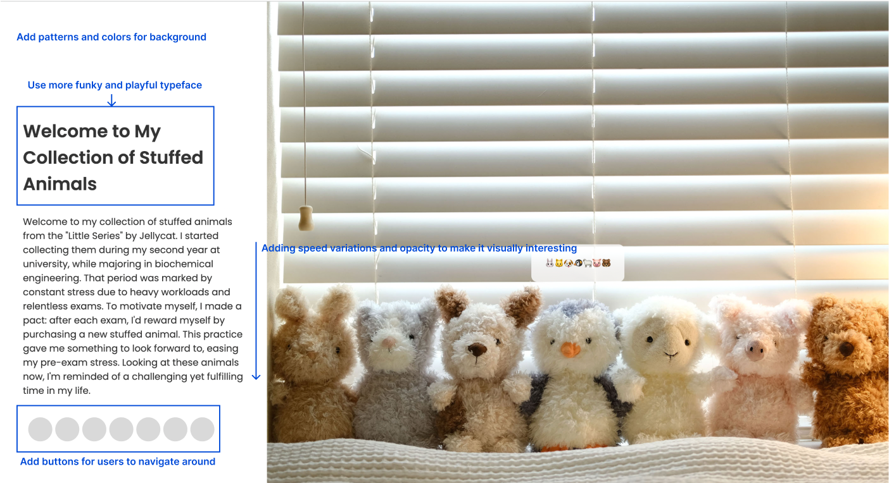

Final Project Expert Review & Report
Expert 1: I met with the undergrad tutor Sky in Wednesday’s class. He’s qualified because he specializes in visual design. Firstly he thinks my current visual design works well, the typeface is readable and clean, and the image is in a high resolution and harmonious to the whole page. The website has a simple, linear layout that is easy to navigate. Each section is dedicated to a different stuffed animal, with descriptive text. However, the transition between the image and text sometimes is a little inconsistent when he already scrolled to the next section the images are still changing, which is less engaging. Also, he thinks although the website has a minimal color scheme, predominantly white that creates a clean and uncluttered look, it can also appear a bit stark. Adding subtle colors, perhaps inspired by the stuffed animals' themes, could make the site more visually appealing without overwhelming the content, and considering the blank space leaving each section, he recommends maybe adding some cute animal patterns.
Expert 2: I met with my design mentor Xinyue Guo, who has instructed and advised one of my projects before. She specializes in visual design and product design and has won awards like core77 and the Red. She is currently working as a product designer at Microsoft. She reflected on my Every Picture project that she loves the cleanses and those cute images. For the typography, she thinks while the clarity and readability are spot-on, adding more variations could elevate the visual interest, for example using some cute and round fonts that could fit the style of those animals. Also, she mentioned that although the zoom-on-scroll effect is interactive, the offset is too plain by just scrolling down, she suggested adding some velocity to the scrolling offset and playing around with the opacity which might create some ease in and ease out effect. Also, she noticed that in order to improve the user experience, adding some buttons that could allow users to navigate around between each animal rather than scrolling forever.
